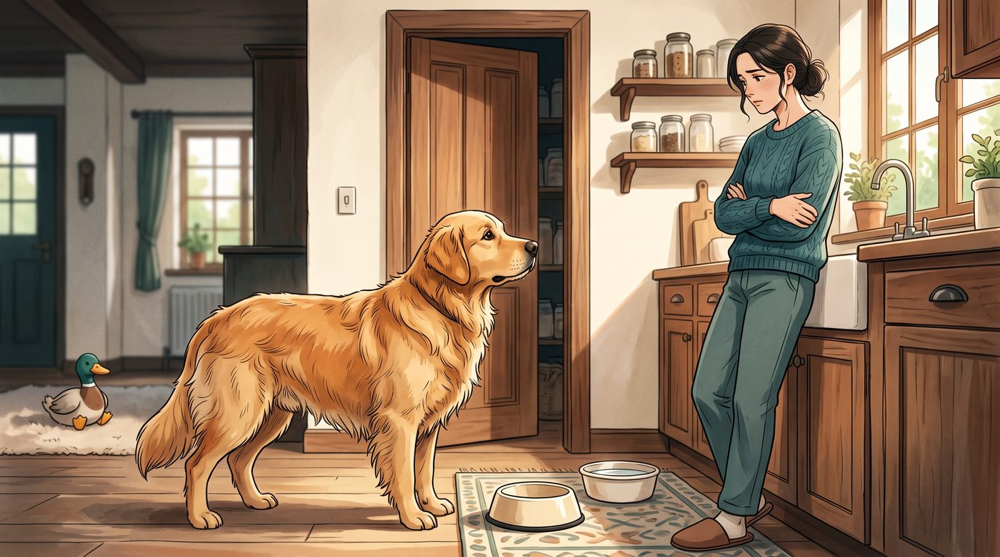
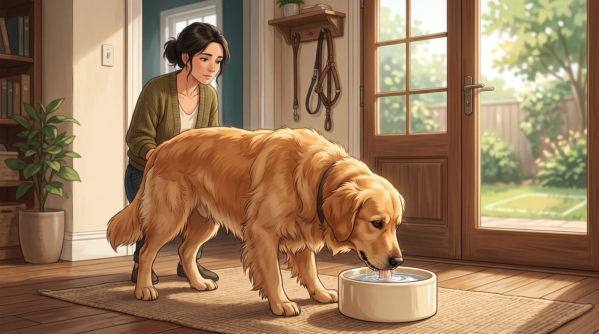
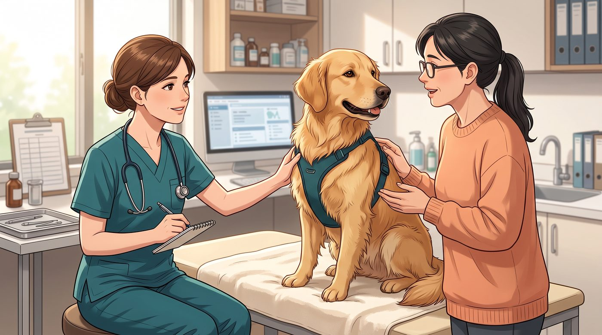

Eu já conheci cachorro que parecia ter feito uma promessa de nunca deixar comida sobrando.
Come.
Olha para o pote.
Olha para o tutor.
Olha para a cozinha.
E, se alguém der a menor oportunidade, está pronto para comer novamente.
À primeira vista, parece apenas aquele apetite típico de cachorro.
Mas existe uma diferença entre um cão que adora comer e um cachorro que apresentou uma mudança real no apetite.
Se ele começou recentemente a pedir comida o tempo todo, parece insaciável ou está comendo mais e, mesmo assim, perdendo peso, eu prestaria atenção.
Porque, em alguns casos, a fome excessiva pode ser apenas comportamento. Em outros, pode ser um sinal de que alguma coisa está acontecendo no organismo.
1. Alguns cachorros simplesmente parecem estar sempre com fome
Vamos começar por uma coisa que pode tranquilizar muitos tutores.
Nem todo cachorro que pede comida está passando fome.
Alguns aprenderam que insistir funciona.
O cachorro pede.
Alguém dá um petisco.
Ele percebe que pedir comida traz recompensa.
Então pede novamente.
Com o tempo, aquele comportamento pode se transformar em uma rotina.
Além disso, filhotes em crescimento, cães muito ativos e fêmeas gestantes ou amamentando podem naturalmente apresentar necessidades energéticas maiores e, consequentemente, maior apetite.
Por isso, antes de pensar em doença, eu faria uma pergunta simples:
isso sempre foi assim ou começou agora?
Essa diferença muda bastante a forma de olhar para o problema.
2. Pedir comida não significa necessariamente estar com fome
Essa é uma distinção que considero muito importante.
Existe a necessidade física de energia e existe o comportamento de buscar comida.
Um cachorro pode ter acabado de comer a quantidade adequada e, cinco minutos depois, aparecer na cozinha.
Isso não significa automaticamente que a refeição foi insuficiente.
Pode ser expectativa.
Pode ser hábito.
Pode ser tédio.
Pode ser porque ele descobriu que aquela carinha irresistível costuma funcionar.
E existe ainda outro detalhe: alguns cães comem muito rápido.
O tutor olha para o pote vazio e pensa:
"Ele ainda está com fome!"
Mas, na verdade, o cachorro simplesmente terminou a refeição rapidamente.
Por isso, eu observaria o conjunto da rotina antes de aumentar a quantidade de comida.
3. Quando a fome aumenta de repente, eu prestaria atenção

Aqui a situação muda.
Imagine um cachorro que sempre comeu normalmente.
De repente, ele começa a procurar comida pela casa.
Passa a pedir durante as refeições.
Tenta roubar alimentos.
Parece desesperado pelo próximo petisco.
E isso continua acontecendo por dias ou semanas.
Uma mudança persistente no apetite merece ser observada.
Principalmente se vier acompanhada de outras alterações.
A VCA destaca que o histórico do animal é uma parte importante da investigação: quanto ele está comendo, há quanto tempo o apetite mudou, quais medicamentos utiliza e se também ocorreram mudanças na sede, urina, energia ou fezes.
Ou seja:
não observe apenas a fome. Observe o cachorro inteiro.
4. E se ele come muito, mas está emagrecendo?
Esse é um dos sinais que mais chamam minha atenção.
Normalmente, quando um cachorro come mais, esperaríamos que seu peso aumentasse ou pelo menos permanecesse estável, dependendo da quantidade de alimento e atividade.
Quando acontece o contrário — muita fome acompanhada de perda de peso — vale investigar.
Existem condições capazes de alterar a maneira como o organismo utiliza ou absorve os nutrientes.
Diabetes mellitus é um exemplo. Em cães com diabetes, podem aparecer aumento de apetite, perda de peso, aumento da sede e aumento da urina.
Problemas intestinais que prejudicam a absorção dos nutrientes e algumas doenças pancreáticas também podem estar associados ao aumento de apetite. Parasitas intestinais são outra possibilidade, especialmente em animais jovens.
Isso não significa que um cachorro faminto e magro tenha diabetes ou vermes.
Significa que essa combinação merece investigação.
5. A fome excessiva também pode aparecer com muita sede e muito xixi

Existe uma combinação que eu acho especialmente importante o tutor reconhecer:
come mais + bebe mais + faz mais xixi.
Quando esses três comportamentos aparecem juntos, não é uma boa ideia simplesmente aumentar a quantidade de comida e esperar que tudo volte ao normal.
Diabetes mellitus pode produzir justamente esse conjunto de sinais, frequentemente acompanhado de perda de peso.
A síndrome de Cushing também pode estar associada a aumento de apetite, sede e urinação. Outros sinais podem incluir barriga aumentada, respiração ofegante, fraqueza muscular e alterações na pele e no pelo.
Novamente, esses sinais não fecham um diagnóstico.
Mas são informações importantes para levar ao veterinário.
6. Alguns medicamentos também podem aumentar o apetite
Existe uma possibilidade que às vezes passa completamente despercebida:
o cachorro começou a comer mais depois de iniciar um medicamento.
Alguns medicamentos, especialmente corticosteroides como a prednisona, podem aumentar o apetite.
Por isso, se a mudança aconteceu depois de começar algum tratamento, não interrompa o medicamento por conta própria.
Anote quando o medicamento começou e quando a alteração do apetite apareceu.
Essa informação pode ser muito útil para o veterinário decidir se existe relação.
E isso vale para qualquer mudança recente:
ração nova, petiscos diferentes, mudança na rotina, aumento de atividade física ou alterações no ambiente.
Às vezes, a explicação está justamente naquilo que mudou pouco antes do comportamento começar.
7. Quando devo levar meu cachorro ao veterinário?

Eu procuraria orientação veterinária quando o aumento do apetite for novo, persistente ou acompanhado de outras alterações.
Principalmente se você perceber:
- Perda de peso
- Aumento da sede
- Aumento da urina
- Vômitos
- Diarreia
- Mudança importante nas fezes
- Barriga aumentada
- Fraqueza ou cansaço
- Alterações no pelo ou na pele
- Mudança de comportamento
- Fome exagerada que não existia antes
O veterinário provavelmente vai começar perguntando exatamente aquilo que você consegue observar em casa.
Quanto ele come?
Quando começou?
Quanto peso ganhou ou perdeu?
Está bebendo mais?
Está urinando mais?
As fezes mudaram?
Está tomando algum medicamento?
Dependendo do caso, a investigação pode incluir exame físico, exames de sangue, urina e avaliação de fezes para parasitas, entre outros testes escolhidos conforme os sinais apresentados.
Antes de colocar mais comida no pote, observe o que mudou
Eu sei que é difícil resistir quando o cachorro olha para você depois de terminar a refeição.
Aquela expressão parece dizer:
"Foi uma entrada. Cadê o jantar?"
Mas nem sempre a solução para um cachorro que pede comida é colocar mais comida.
Primeiro, eu tentaria entender se o apetite realmente aumentou ou se o comportamento de pedir comida aumentou.
E observaria principalmente se existem outras mudanças acontecendo ao mesmo tempo.
Um cachorro que sempre foi guloso, mantém o peso, está ativo e não apresenta nenhuma outra alteração pode simplesmente ter uma relação muito forte com comida.
Já aquele que come cada vez mais, emagrece, bebe muita água e começa a urinar frequentemente está contando uma história diferente.
E essa história merece ser investigada.
Este conteúdo é educativo e não substitui uma avaliação veterinária. Se seu cachorro apresentar aumento persistente do apetite, especialmente acompanhado de perda de peso, aumento da sede, urina, vômitos, diarreia ou outras alterações, procure um médico-veterinário.